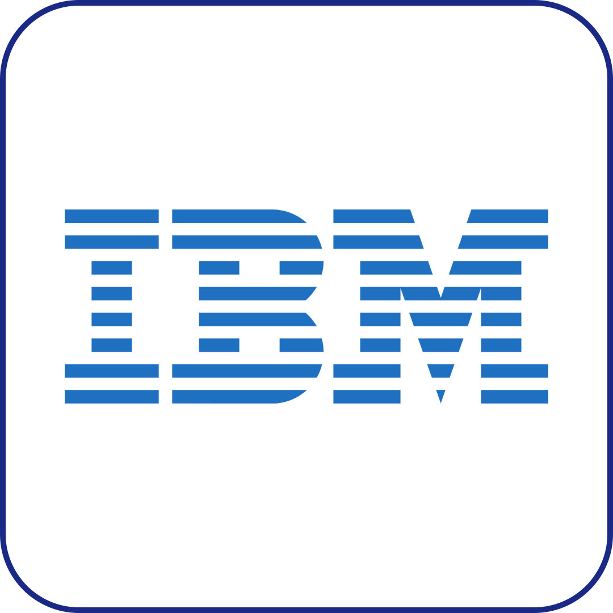
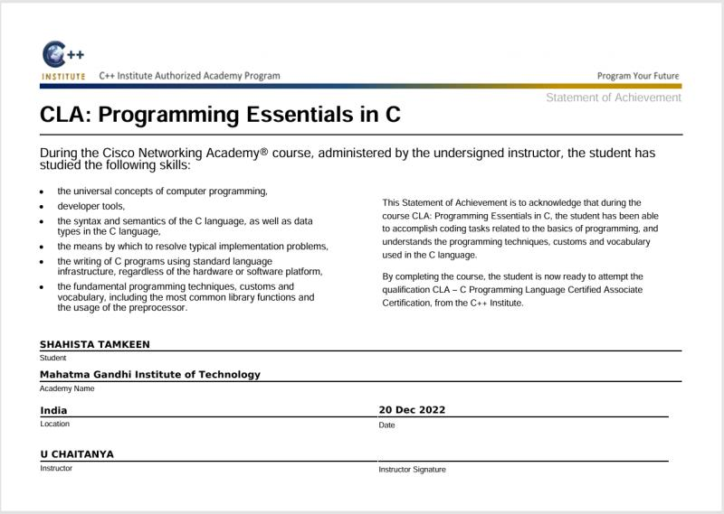
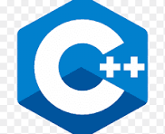
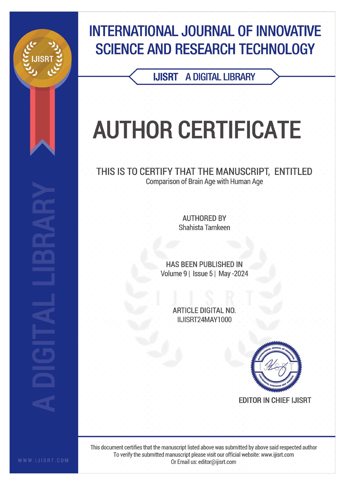

Hi, I'm Shahista Tamkeen
Illinois, USA
Generative AI, LLMs, GNNs, RAG, Apache Spark, LangGraph, Python, FastAPI, Azure AI
stamkeen0506@gmail.com
Connect
About Me
AI & Engineering Tech Stack
AI & MACHINE LEARNING
- Scikit-learn
- XGBoost
- LightGBM
- CatBoost
- TensorFlow
- PyTorch
- PyTorch Geometric
- Graph Neural Networks
- CNNs, RNNs & LSTMs
- Transformers
- Feature Engineering
- SHAP & LIME
GENERATIVE AI & LLMs
- Retrieval-Augmented Generation
- LangChain
- LangGraph
- Azure OpenAI
- OpenAI API
- AI Agents
- Prompt Engineering
- Function Calling
- Semantic Search
- Pinecone
- Llama
- Mistral
BACKEND & SOFTWARE ENGINEERING
- Python
- Java
- SQL
- Bash
- FastAPI
- Flask
- REST APIs
- Microservices
- Apache Kafka
- Data Structures & Algorithms
- Unit Testing
- Integration Testing
FRONTEND DEVELOPMENT
- React.js
- Next.js
- JavaScript
- TypeScript
- HTML5
- CSS3
- Tailwind CSS
- Responsive Design
CLOUD & MLOps
- Microsoft Azure
- AWS
- MLflow
- Docker
- Kubernetes
- GitHub Actions
- CI/CD Pipelines
- Model Monitoring
- FastAPI Model Serving
DATA ENGINEERING
- Apache Spark
- Spark Structured Streaming
- ETL Pipelines
- Snowflake
- SQL Server
- PostgreSQL
- Redis
- Pandas
- NumPy
ANALYTICS & VISUALIZATION
- Power BI
- Tableau
- Streamlit
- Matplotlib
- Predictive Analytics
- Model Evaluation
- Business Intelligence
TOOLS & PRACTICES
- Git
- GitHub
- VS Code
- Jupyter Notebook
- Postman
- Agile / Scrum
- Technical Documentation
- Software Engineering
Experience
AI / Machine Learning Engineer
AIG – USA Jan 2026 – Present
- Developed an XGBoost-based fraud detection solution using Python and Apache Spark, improving fraud detection accuracy by 22% across enterprise financial datasets.
- Engineered Graph Neural Network models with PyTorch Geometric to analyze relationships among customers, merchants, and devices, improving complex fraud-pattern detection by 18%.
- Built a Retrieval-Augmented Generation platform using LangChain, LangGraph, Azure OpenAI, and Pinecone, reducing fraud investigation time by 30%.
- Designed scalable FastAPI inference services that exposed machine learning models through REST APIs for enterprise applications.
- Standardized feature engineering, experiment tracking, and model-validation workflows using MLflow.
- Containerized machine learning services using Docker and Kubernetes for scalable and reliable deployment.
- Collaborated with software engineers, data engineers, and fraud analysts while following Git, code-review, testing, and CI/CD best practices.
Machine Learning Engineer
Persistent Systems – India Nov 2021 – Jul 2024
- Developed machine learning models for credit risk, fraud detection, and customer analytics using Python, Scikit-learn, XGBoost, and LightGBM, improving lending-risk prediction accuracy by 24%.
- Built scalable Apache Spark and SQL pipelines that processed more than 5 million financial records, reducing preprocessing time by 30%.
- Designed FastAPI REST services to integrate machine learning models into enterprise banking applications for real-time risk scoring.
- Applied feature engineering, hyperparameter optimization, cross-validation, SHAP, and LIME, improving model precision by 21%.
- Automated model training and deployment workflows using MLflow, Docker, and Apache Airflow.
- Collaborated with product managers, business analysts, and engineering teams to translate business requirements into production-ready ML solutions.
- Created Power BI and Tableau dashboards for fraud trends, customer segmentation, model performance, and business KPIs.
🚀 Featured Machine Learning Projects
Production-focused projects spanning multi-agent AI, computer vision, deep learning, financial risk modeling, and intelligent decision systems.

🤖 Digital Twin Multi-Agent AI Platform
Designed and developed a production-ready multi-agent AI platform using LangGraph, LangChain, and Azure OpenAI to automate career guidance, financial planning, and personalized learning workflows. Implemented RAG, semantic search, persistent memory, vector retrieval, and agent orchestration to generate contextual multi-step AI responses.

🔐 AI Powered Cloud Monitoring & Security Platform
AI-powered cloud monitoring and security platform built on Microsoft Azure, delivering real-time system metrics, anomaly detection, and intelligent alerting. Integrates FastAPI services, secure multi-tier infrastructure, and OpenAI-based analysis to provide actionable insights and improve system reliability.

🧊 AI-Powered 3D Point Cloud Quality Assessment System
Developed an AI-powered computer vision application for automated quality assessment of construction point cloud datasets. Implemented point cloud registration, deviation analysis, geometric measurements, and defect detection, with an interactive React and Three.js interface for real-time 3D inspection.

📋 Job Tracker
Created a job application tracking system to organize opportunities, manage application stages, and simplify follow-ups with a clean, productivity-focused workflow.

🏗️ Construction RFI Management App
A Power Apps–based application designed to streamline the management of RFIs (Requests for Information) in construction projects. It enables users to submit RFIs, allows admins to approve or reject requests with comments, and provides real-time status tracking along with advanced filtering and a complete history dashboard. Built using Microsoft Power Platform (Power Apps, Power Automate, Dataverse) to replace manual processes and improve team efficiency.

🏥 Patient Readmission Dashboard
Designed a healthcare analytics dashboard to explore readmission trends, review model performance, and highlight high-risk patient insights for data-driven clinical decision support.

🌐 Personal Portfolio Website
Built and designed a responsive personal portfolio website to showcase projects, technical skills, experience, certifications, and research in a modern interactive format.

🛍️ E-Commerce Website — MOH BY AMIKSHA
Developed a full-stack e-commerce platform for MOH BY AMIKSHA, a handcrafted women's clothing brand. Built a dynamic, responsive storefront featuring product collections, made-to-order customization, and a seamless shopping experience. Implemented RESTful APIs for product management, user authentication, and order processing, backed by a relational database.

🏦 Customer Risk & Loan Prediction
Developed supervised machine learning models to predict customer credit risk and loan approval outcomes using structured financial datasets. Performed feature engineering, exploratory analysis, and model optimization, and created Streamlit and Power BI dashboards for customer segmentation and lending insights.

🧠 Brain Age Prediction Using Deep Learning
Developed a deep learning framework using Convolutional Neural Networks to predict biological brain age from MRI-based neuroimaging datasets. Built an end-to-end pipeline for image preprocessing, augmentation, feature extraction, model training, and evaluation to support medical-imaging research.

📝 Natural Language Processing System
Designed and implemented an NLP pipeline for sentiment analysis and text classification. Built vectorization workflows, applied machine learning models, and optimized model performance using cross-validation and hyperparameter tuning techniques.

🫁 Pneumonia Detection Using CNN
Built a convolutional neural network model for pneumonia detection using chest X-ray images. Implemented image preprocessing, augmentation, and classification pipelines to improve accuracy and generalization. Evaluated performance using confusion matrix and ROC analysis.
📚 Publication
Published research applying deep learning to medical neuroimaging.
AI for Brain Age Prediction Using Deep Learning
Published research on deep learning-based brain-age prediction using MRI neuroimaging datasets. Developed a Convolutional Neural Network framework for image preprocessing, feature extraction, model training, evaluation, and biological brain-age estimation.
LinkedIn Timeline
A live preview of my latest professional posts and updates.
Show all posts🏅 Certifications

Claude 101
 Anthropic
Anthropic
Issued Jun 2026
Claude • Claude Cowork • Generative AI

AI Fluency: Framework & Foundations
Anthropic
Issued Jun 2026
AI Fluency • Responsible AI • AI Foundations

Google Cloud Certified Professional
 Google
Google
Issued Apr 2024
Cloud Computing • Google Cloud • Cloud Services

Data Analysis with Python

IBMIssued Jun 2025
Python • Data Analysis • Pandas
Career Essentials in Data Analysis
Issued Jan 2025
Data Analytics • Data Visualization • Business Analysis

Java Fundamentals
 Oracle
Oracle
Issued Oct 2022
Java • Object-Oriented Programming • Programming Fundamentals

CLA: Programming Essentials in C

C++ InstituteIssued Dec 2022
C Programming • Programming Logic • Problem Solving

Research Academic Paper Certificate
Issued May 2024
Machine Learning • CNN • Research • Medical Imaging
🎓Education
 Elmhurst University
Elmhurst University
Master's in Computer Science & Information Technology
🎓Aug 2024 – May 2026
GPA: 3.9/4Relevant Coursework: Relevant Coursework: Coursework focused on advanced Python programming, data structures and algorithms, database systems and query optimization, data warehousing and ETL architecture, distributed systems, cloud computing (AWS architecture), software engineering and design patterns, big data processing (PySpark), machine learning systems, and API development. This curriculum strengthened my ability to design scalable, production-ready systems and build reliable data-driven applications.
Mahatma Gandhi Institute of Technology
Bachelor’s in Information Technology
🏛Aug 2020 – Jul 2024
GPA: 7.5/10Relevant Coursework: Relevant Coursework: Completed foundational coursework in object-oriented programming (Java/C++), operating systems, computer networks, database management systems, software engineering, data structures, web technologies, and artificial intelligence. This academic foundation built strong problem-solving skills, system-level understanding, and core software engineering principles.
Resume
Shahista Tamkeen
Machine Learning Engineer | Generative AI | LLMs | GNNs | RAG | MLOps | Agentic AI
📍 Illinois, USA
📧 stamkeen0506@gmail.com
🎓 Education
MS in Computer Science
Elmhurst University
Aug 2024 – May 2026
Bachelor of Technology
Mahatma Gandhi Institute of Technology
Aug 2020 – Jul 2024
🏆 Highlights
- 3+ years of Machine Learning experience
- Built production-ready AI, RAG, and LLM applications
- Experience with FastAPI, Spark, Docker, Kubernetes, and Azure
- Published research in AI-based brain age prediction
Projects & Experience
-
AIG — AI / Machine Learning Engineer
Developing fraud detection, GNN, RAG, FastAPI, and cloud-native MLOps solutions using Python, Apache Spark, Azure OpenAI, MLflow, Docker, and Kubernetes. -
Persistent Systems — Machine Learning Engineer
Developed credit risk, fraud detection, model APIs, feature pipelines, and explainable AI workflows for financial services. -
Digital Twin Multi-Agent AI Platform
Built an agentic AI system using LangGraph, OpenAI, FastAPI, React, PostgreSQL, RAG, and LLM orchestration. -
3D Point Cloud QA System
Developed an AI-powered construction QA platform using Open3D, Three.js, FastAPI, React, and Python.
Key Skills
Let’s Connect & Collaborate 💙
Whether it’s a new project, collaboration, or just to say hi - I’d love to hear from you!